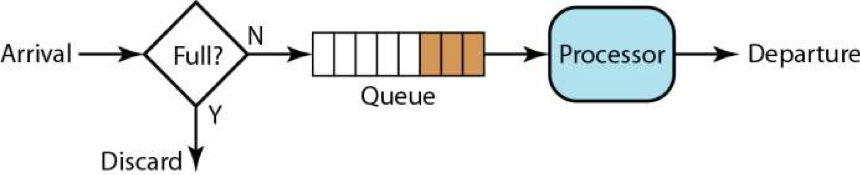
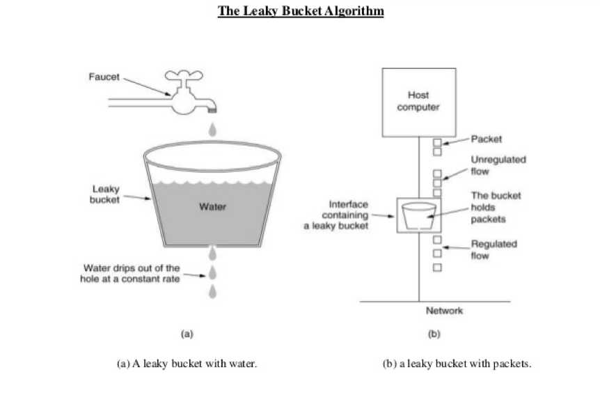
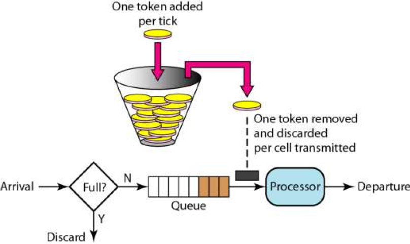

- 000 开篇词 洞悉技术的本质，享受科技的乐趣.md.html
- 001 程序员如何用技术变现（上）.md.html
- 002 程序员如何用技术变现（下）.md.html
- 003 Equifax信息泄露始末.md.html
- 004 从Equifax信息泄露看数据安全.md.html
- 005 何为技术领导力.md.html
- 006 如何拥有技术领导力.md.html
- 007 推荐阅读：每个程序员都该知道的事.md.html
- 008 Go语言，Docker和新技术.md.html
- 009 答疑解惑：渴望、热情和选择.md.html
- 010 如何成为一个大家愿意追随的Leader？.md.html
- 011 程序中的错误处理：错误返回码和异常捕捉.md.html
- 012 程序中的错误处理：异步编程和最佳实践.md.html
- 013 魔数 0x5f3759df.md.html
- 014 推荐阅读：机器学习101.md.html
- 015 时间管理：同扭曲时间的事儿抗争.md.html
- 016 时间管理：投资赚取时间.md.html
- 017 故障处理最佳实践：应对故障.md.html
- 018 故障处理最佳实践：故障改进.md.html
- 019 答疑解惑：我们应该能够识别的表象和本质.md.html
- 020 分布式系统架构的冰与火.md.html
- 021 从亚马逊的实践，谈分布式系统的难点.md.html
- 022 分布式系统的技术栈.md.html
- 023 分布式系统关键技术：全栈监控.md.html
- 024 分布式系统关键技术：服务调度.md.html
- 025 分布式系统关键技术：流量与数据调度.md.html
- 026 洞悉PaaS平台的本质.md.html
- 027 推荐阅读：分布式系统架构经典资料.md.html
- 028 编程范式游记（1）- 起源.md.html
- 029 编程范式游记（2）- 泛型编程.md.html
- 030 编程范式游记（3） - 类型系统和泛型的本质.md.html
- 031 Git协同工作流，你该怎样选.md.html
- 032 推荐阅读：分布式数据调度相关论文.md.html
- 033 编程范式游记（4）- 函数式编程.md.html
- 034 编程范式游记（5）- 修饰器模式.md.html
- 035 编程范式游记（6）- 面向对象编程.md.html
- 036 编程范式游记（7）- 基于原型的编程范式.md.html
- 037 编程范式游记（8）- Go 语言的委托模式.md.html
- 038 编程范式游记（9）- 编程的本质.md.html
- 039 编程范式游记（10）- 逻辑编程范式.md.html
- 040 编程范式游记（11）- 程序世界里的编程范式.md.html
- 041 弹力设计篇之“认识故障和弹力设计”.md.html
- 042 弹力设计篇之“隔离设计”.md.html
- 043 弹力设计篇之“异步通讯设计”.md.html
- 044 弹力设计篇之“幂等性设计”.md.html
- 045 弹力设计篇之“服务的状态”.md.html
- 046 弹力设计篇之“补偿事务”.md.html
- 047 弹力设计篇之“重试设计”.md.html
- 048 弹力设计篇之“熔断设计”.md.html
- 049 弹力设计篇之“限流设计”.md.html
- 050 弹力设计篇之“降级设计”.md.html
- 051 弹力设计篇之“弹力设计总结”.md.html
- 052 区块链技术 - 区块链的革命性及技术概要.md.html
- 053 区块链技术 - 区块链技术细节 - 哈希算法.md.html
- 054 区块链技术 - 区块链技术细节 - 加密和挖矿.md.html
- 055 区块链技术 - 去中心化的共识机制.md.html
- 056 区块链技术 - 智能合约.md.html
- 057 区块链技术 - 传统金融和虚拟货币.md.html
- 058 管理设计篇之分布式锁.md.html
- 059 管理设计篇之配置中心.md.html
- 060 管理设计篇之边车模式.md.html
- 061 管理设计篇之服务网格.md.html
- 062 管理设计篇之网关模式.md.html
- 063 管理设计篇之部署升级策略.md.html
- 064 性能设计篇之缓存.md.html
- 065 性能设计篇之异步处理.md.html
- 066 性能设计篇之数据库扩展.md.html
- 067 性能设计篇之秒杀.md.html
- 068 性能设计篇之边缘计算.md.html
- 069 程序员练级攻略（2018）：开篇词.md.html
- 070 程序员练级攻略（2018）：零基础启蒙.md.html
- 071 程序员练级攻略（2018）：正式入门.md.html
- 072 程序员练级攻略（2018）：程序员修养.md.html
- 073 程序员练级攻略（2018）：编程语言.md.html
- 074 程序员练级攻略：理论学科.md.html
- 075 程序员练级攻略（2018）：系统知识.md.html
- 076 程序员练级攻略（2018）：软件设计.md.html
- 077 程序员练级攻略（2018）：Linux系统、内存和网络.md.html
- 078 程序员练级攻略（2018）：异步IO模型和Lock-Free编程.md.html
- 079 程序员练级攻略（2018）：Java底层知识.md.html
- 080 程序员练级攻略（2018）：数据库.md.html
- 081 程序员练级攻略（2018）：分布式架构入门.md.html
- 082 程序员练级攻略（2018）：分布式架构经典图书和论文.md.html
- 083 程序员练级攻略（2018）：分布式架构工程设计.md.html
- 084 程序员练级攻略（2018）：微服务.md.html
- 085 程序员练级攻略（2018）：容器化和自动化运维.md.html
- 086 程序员练级攻略（2018）：机器学习和人工智能.md.html
- 087 程序员练级攻略（2018）：前端基础和底层原理.md.html
- 088 程序员练级攻略（2018）：前端性能优化和框架.md.html
- 089 程序员练级攻略（2018）：UIUX设计.md.html
- 090 程序员练级攻略（2018）：技术资源集散地.md.html
- 091 程序员面试攻略：面试前的准备.md.html
- 092 程序员面试攻略：面试中的技巧.md.html
- 093 程序员面试攻略：面试风格.md.html
- 094 程序员面试攻略：实力才是王中王.md.html
- 095 高效学习：端正学习态度.md.html
- 096 高效学习：源头、原理和知识地图.md.html
- 097 高效学习：深度，归纳和坚持实践.md.html
- 098 高效学习：如何学习和阅读代码.md.html
- 099 高效学习：面对枯燥和量大的知识.md.html
- 100 高效沟通：Talk和Code同等重要.md.html
- 101 高效沟通：沟通阻碍和应对方法.md.html
- 102 高效沟通：沟通方式及技巧.md.html
- 103 高效沟通：沟通技术.md.html
- 104 高效沟通：好老板要善于提问.md.html
- 105 高效沟通：好好说话的艺术.md.html
- 106 加餐 谈谈我的“三观”.md.html
- 107 结束语 业精于勤，行成于思.md.html
- 捐赠
049 弹力设计篇之“限流设计”
保护系统不会在过载的情况下导致问题，那么，我们就需要限流。
我们在一些系统中都可以看到这样的设计，比如，我们的数据库访问的连接池，还有我们的线程池，还有 nginx 下的用于限制瞬时并发连接数的 limit_conn 模块，限制每秒平均速率的 limit_req 模块，还有限制 MQ 的生产速，等等。
限流的策略
限流的目的是通过对并发访问进行限速，相关的策略一般是，一旦达到限制的速率，那么就会触发相应的限流行为。一般来说，触发的限流行为如下。
- 拒绝服务。把多出来的请求拒绝掉。一般来说，好的限流系统在受到流量暴增时，会统计当前哪个客户端来的请求最多，直接拒掉这个客户端，这种行为可以把一些不正常的或者是带有恶意的高并发访问抵挡掉。
- 服务降级。关闭或是把后端服务做降级处理。这样可以让服务有足够的资源来处理更多的请求。降级有很多方式，一种是把一些不重要的服务给停掉，把 CPU、内存或是数据的资源让给更重要的功能；一种是不再返回全量数据，只返回部分数据。
因为全量数据需要做 SQL Join 操作，部分的数据则不需要，所以可以让 SQL 执行更快，还有最快的一种是直接返回预设的缓存，以牺牲一致性的方式来获得更大的性能吞吐。
- 特权请求。所谓特权请求的意思是，资源不够了，我只能把有限的资源分给重要的用户，比如：分给权利更高的 VIP 用户。在多租户系统下，限流的时候应该保大客户的，所以大客户有特权可以优先处理，而其它的非特权用户就得让路了。
- 延时处理。在这种情况下，一般会有一个队列来缓冲大量的请求，这个队列如果满了，那么就只能拒绝用户了，如果这个队列中的任务超时了，也要返回系统繁忙的错误了。使用缓冲队列只是为了减缓压力，一般用于应对短暂的峰刺请求。
- 弹性伸缩。动用自动化运维的方式对相应的服务做自动化的伸缩。这个需要一个应用性能的监控系统，能够感知到目前最繁忙的 TOP 5 的服务是哪几个。
然后去伸缩它们，还需要一个自动化的发布、部署和服务注册的运维系统，而且还要快，越快越好。否则，系统会被压死掉了。当然，如果是数据库的压力过大，弹性伸缩应用是没什么用的，这个时候还是应该限流。
限流的实现方式
计数器方式
最简单的限流算法就是维护一个计数器 Counter，当一个请求来时，就做加一操作，当一个请求处理完后就做减一操作。如果这个 Counter 大于某个数了（我们设定的限流阈值），那么就开始拒绝请求以保护系统的负载了。
这个算法足够的简单粗暴了。
队列算法
在这个算法下，请求的速度可以是波动的，而处理的速度则是非常均速的。这个算法其实有点像一个 FIFO 的算法。

在上面这个 FIFO 的队列上，我们可以扩展出一些别的玩法。
一个是有优先级的队列，处理时先处理高优先级的队列，然后再处理低优先级的队列。 如下图所示，只有高优先级的队列被处理完成后，才会处理低优先级的队列。

有优先级的队列可能会导致低优先级队列长时间得不到处理。为了避免低优先级的队列被饿死，一般来说是分配不同的比例的处理时间到不同的队列上，于是我们有了带权重的队列。
如下图所示。有三个队列的权重分布是 3:2:1，这意味着我们需要在权重为 3 的这个队列上处理 3 个请求后，再去权重为 2 的队列上处理 2 个请求，最后再去权重为 1 的队列上处理 1 个请求，如此返复。

队列流控是以队列的的方式来处理请求。如果处理过慢，那么就会导致队列满，而开始触发限流。
但是，这样的算法需要用队列长度来控制流量，在配置上比较难以操作。如果队列过长，导致后端服务在队列没有满时就挂掉了。一般来说，这样的模型不能做 push 的，而是要做 pull 方式的会好一些。
漏斗算法 Leaky Bucket
漏斗算法可以参看 Wikipedia 的相关词条 Leaky Bucket。
下图是一个漏斗算法的示意图 。

我们可以看到，就像一个漏斗一样，进来的水量就好像访问流量一样，而出去的水量就像是我们的系统处理请求一样。当访问流量过大时这个漏斗中就会积水，如果水太多了就会溢出。
一般来说，这个“漏斗”是用一个队列来实现的，当请求过多时，队列就会开始积压请求，如果队列满了，就会开拒绝请求。很多系统都有这样的设计，比如 TCP。当请求的数量过多时，就会有一个 sync backlog 的队列来缓冲请求，或是 TCP 的滑动窗口也是用于流控的队列。
我们可以看到，漏斗算法其实就是在队列请求中加上一个限流器，来让 Processor 以一个均匀的速度处理请求。
令牌桶算法 Token Bucket
关于令牌桶算法，主要是有一个中间人。在一个桶内按照一定的速率放入一些 token，然后，处理程序要处理请求时，需要拿到 token，才能处理；如果拿不到，则不处理。
下面这个图很清楚地说明了这个算法。

从理论上来说，令牌桶的算法和漏斗算法不一样的是，漏斗算法中，处理请求是以一个常量和恒定的速度处理的，而令牌桶算法则是在流量小的时候“攒钱”，流量大的时候，可以快速处理。
然而，我们可能会问，Processor 的处理速度因为有队列的存在，所以其总是能以最大处理能力来处理请求的，这也是我们所希望的方式。因此，令牌桶和漏斗都是受制于 Processor 的最大处理能力的。无论令牌桶里有多少令牌，也无论队列中还有多少请求。总之，Processor 在大流量来临时总是按照自己最大的处理能力来处理的。
但是，试想一下，如果我们的 Processor 只是一个非常简单的任务分配器，比如像 Nginx 这样的基本没有什么业务逻辑的网关，那么它的处理速度一定很快，不会有什么瓶颈，而其用来把请求转发给后端服务，那么在这种情况下，这两个算法就有不一样的情况了。
漏斗算法会以一个稳定的速度转发，而令牌桶算法平时流量不大时在“攒钱”，流量大时，可以一次发出队列里有的请求，而后就受到令牌桶的流控限制。
另外，令牌桶还可能做成第三方的一个服务，这样可以在分布式的系统中对全局进行流控，这也是一个很好的方式。
基于响应时间的动态限流
上面的算法有个不好的地方，就是需要设置一个确定的限流值。这就要求我们每次发布服务时都做相应的性能测试，找到系统最大的性能值。
当然，性能测试并不是很容易做的。有关性能测试的方法请参看我在 CoolShell 上的这篇文章《性能测试应该怎么做》。虽然性能测试比较不容易，但是还是应该要做的。
然而，在很多时候，我们却并不知道这个限流值，或是很难给出一个合适的值。其基本会有如下的一些因素：
- 实际情况下，很多服务会依赖于数据库。所以，不同的用户请求，会对不同的数据集进行操作。就算是相同的请求，可能数据集也不一样（比如，现在很多应用都会有一个时间线 Feed 流，不同的用户关心的主题人人不一样，数据也不一样）。
而且数据库的数据是在不断地变化的，可能前两天性能还行，因为数据量增加导致性能变差。在这种情况下，我们很难给出一个确定的一成不变的值，因为关系型数据库对于同一条 SQL 语句的执行时间其实是不可预测的（NoSQL 的就比 RDBMS 的可预测性要好）。
- 不同的 API 有不同的性能。我们要在线上为每一个 API 配置不同的限流值，这点太难配置，也很难管理。
- 而且，现在的服务都是能自动化伸缩的，不同大小的集群的性能也不一样，所以，在自动化伸缩的情况下，我们要动态地调整限流的阈值，这点太难做到了。
基于上述这些原因，我们的限流的值是很难被静态地设置成恒定的一个值。
我们想使用一种动态限流的方式。这种方式，不再设定一个特定的流控值，而是能够动态地感知系统的压力来自动化地限流。
这方面设计的典范是 TCP 协议的拥塞控制的算法。TCP 使用 RTT - Round Trip Time 来探测网络的延时和性能，从而设定相应的“滑动窗口”的大小，以让发送的速率和网络的性能相匹配。这个算法是非常精妙的，我们完全可以借鉴在我们的流控技术中。
我们记录下每次调用后端请求的响应时间，然后在一个时间区间内（比如，过去 10 秒）的请求计算一个响应时间的 P90 或 P99 值，也就是把过去 10 秒内的请求的响应时间排个序，然后看 90% 或 99% 的位置是多少。
这样，我们就知道有多少请求大于某个响应时间。如果这个 P90 或 P99 超过我们设定的阈值，那么我们就自动限流。
这个设计中有几个要点。
- 你需要计算的一定时间内的 P90 或 P99。在有大量请求的情况下，这个非常地耗内存也非常地耗 CPU，因为需要对大量的数据进行排序。
解决方案有两种，一种是不记录所有的请求，采样就好了，另一种是使用一个叫蓄水池的近似算法。关于这个算法这里我不就多说了，《编程珠玑》里讲过这个算法，你也可以自行 Google，英文叫 Reservoir Sampling。
- 这种动态流控需要像 TCP 那样，你需要记录一个当前的 QPS. 如果发现后端的 P90/P99 响应太慢，那么就可以把这个 QPS 减半，然后像 TCP 一样走慢启动的方式，直接到又开始变慢，然后减去 1⁄4 的 QPS，再慢启动，然后再减去 1⁄8 的 QPS……
这个过程有点像个阻尼运行的过程，然后整个限流的流量会在一个值上下做小幅振动。这么做的目的是，如果后端扩容伸缩后性能变好，系统会自动适应后端的最大性能。
- 这种动态限流的方式实现起来并不容易。大家可以看一下 TCP 的算法。TCP 相关的一些算法，我写在了 CoolShell 上的《TCP 的那些事（下）》这篇文章中。你可以用来做参考来实现。
我在现在创业中的 Ease Gateway 的产品中实现了这个算法。
限流的设计要点
限流主要是有四个目的。
- 为了向用户承诺 SLA。我们保证我们的系统在某个速度下的响应时间以及可用性。
- 同时，也可以用来阻止在多租户的情况下，某一用户把资源耗尽而让所有的用户都无法访问的问题。
- 为了应对突发的流量。
- 节约成本。我们不会为了一个不常见的尖峰来把我们的系统扩容到最大的尺寸。而是在有限的资源下能够承受比较高的流量。
在设计上，我们还要有以下的考量。
- 限流应该是在架构的早期考虑。当架构形成后，限流不是很容易加入。
- 限流模块必需是非常好的性能，而且对流量的变化也是非常灵敏的，否则太过迟钝的限流，系统早因为过载而挂掉了。
- 限流应该有个手动的开关，这样在应急的时候，可以手动操作。
- 当限流发生时，应该有个监控事件通知。让我们知道有限流事件发生，这样，运维人员可以及时跟进。而且还可以自动化触发扩容或降级，以缓解系统压力。
- 当限流发生时，对于拒掉的请求，我们应该返回一个特定的限流错误码。这样，可以和其它错误区分开来。而客户端看到限流，可以调整发送速度，或是走重试机制。
- 限流应该让后端的服务感知到。限流发生时，我们应该在协议头中塞进一个标识，比如 HTTP Header 中，放入一个限流的级别，告诉后端服务目前正在限流中。这样，后端服务可以根据这个标识决定是否做降级。
小结
好了，我们来总结一下今天分享的主要内容。首先，限流的目的是为了保护系统不在过载的情况下导致问题。接着讲了几种限流的策略。然后讲了，限流的算法，包括计数器、队列、漏斗和令牌桶。然后讨论了如何基于响应时间来限流。最后，我总结了限流设计的要点。下篇文章中，我们讲述降级设计。希望对你有帮助。
© 2019 - 2023 Liangliang Lee. Powered by gin and hexo-theme-book.